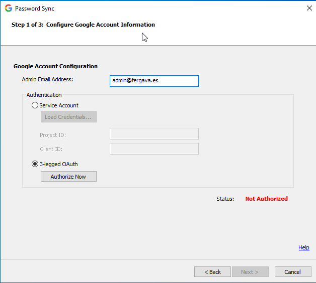

GSPS Configuration Lab
Google Cloud Password Sync (GSPS) es el componente encargado de interceptar cambios de contraseña en Windows y enviarlos instantáneamente a Google.
> Real_Time_Flow
Instalación: El Corazón del Dominio
📍 Domain ControllersA diferencia de GCDS que se instala en un servidor miembro, GSPS debe vivir dentro de los Controladores de Dominio.
- Dónde instalar TODOS los DCs de Escritura (Read-Write DCs)
-
Por qué
GSPS instala una DLL que se "engancha" al proceso de seguridad de Windows (
lsass.exe). Si un usuario cambia su contraseña en el DC01, pero GSPS solo está en el DC02, Google no se entera.
Es necesario REINICIAR el Controlador de Dominio tras la instalación para cargar la DLL en el sistema.
Autorización (OAuth)
📍 GSPS Configuration WizardVinculamos el servidor con la nube mediante un token OAuth, sin guardar contraseñas de admin en el servidor.
- Auth Account admin@fergava.es
- Scope Manage domain users (Gestionar usuarios)
Google generó un Código de Autorización que pegamos en el asistente:
Configuración de Identidad
📍 GSPS > Attribute MappingLe decimos a GSPS cómo saber qué usuario de Windows corresponde a qué usuario de Google.
-
Atributo de Correo
mail
Lógica: Cuando Juan cambia su clave, GSPS mira su campo
mail(juan@fergava.es) y manda la nueva clave a esa cuenta exacta en Google. - Base DN Limit OU=Usuarios,DC=ad,DC=fergava,DC=es (Opcional: Limita la escucha a esta OU)
El Comportamiento ("Escucha Activa")
📍 Concepto TeóricoEsto es lo que más suele confundir: GSPS no funciona como GCDS.
GSPS no puede leer contraseñas viejas (hashes). No puede hacer una carga masiva inicial.
GSPS se queda "dormido" esperando. Solo se despierta cuando un usuario pulsa Ctrl + Alt + Supr > "Cambiar contraseña".
El día de la instalación, nada cambia en Google. Las contraseñas se actualizan una a una a medida que los usuarios caducan sus claves y las renuevan.